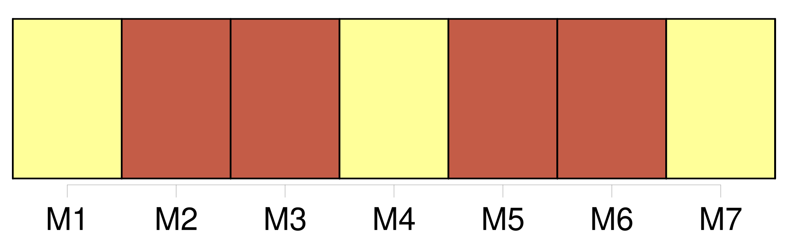
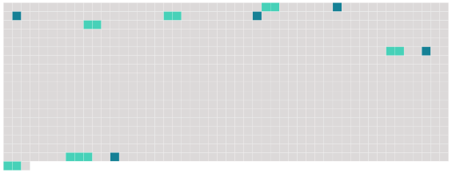

Longueur nb maillons : 11 mentions |
 |
La veille du 14 juillet 1914, en allant à la rencontre de mes frères, quelle ne fut pas ma surprise de voir un attroupement devant la grille [des Maréchaud] Quelques tilleuls élagués cachaient mal [leur] villa au fond du jardin. Depuis deux heures de l'après-midi, [leur] jeune bonne étant devenue folle se réfugiait sur le toit et refusait de descendre. Déjà [les Maréchaud] , épouvantés par le scandale, avaient clos [leurs] volets, si bien que le tragique de cette folle sur un toit s'augmentait de ce que la maison parût abandonnée. Des gens criaient, s'indignaient que [ses maîtres] ne fissent rien pour sauver cette malheureuse. [8 phrases] Il y avait à la fois celle de l'avenue et celles du jardin, car [les Maréchaud] , malgré [leur] absence feinte, n'avaient osé se dispenser d'illuminer, comme notables. [24 phrases]
On imagine l'angoisse [du couple Maréchaud] , chez [soi] , enfermé au milieu de ce bruit et de ces lueurs. Le conseiller municipal, époux de la dame charitable, grimpé sur un petit mur de la grille, improvisait un discours sur la couardise [des propriétaires] |
 |
Il est possible de télécharger la ressource sur la page Ortolang |
Si vous avez des questions ou vous voyez des erreurs, merci d'envoyer un mail à silvia.federzoni89@gmail.com |